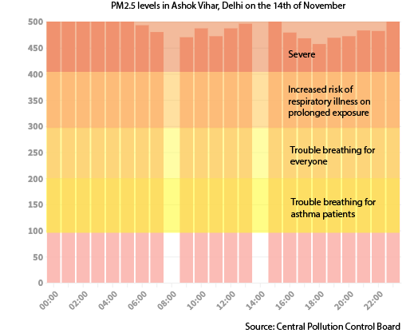
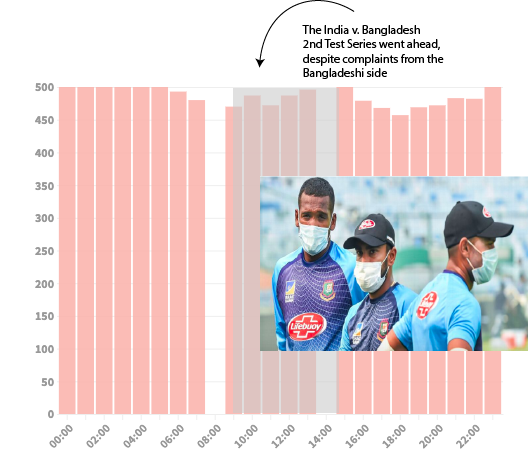
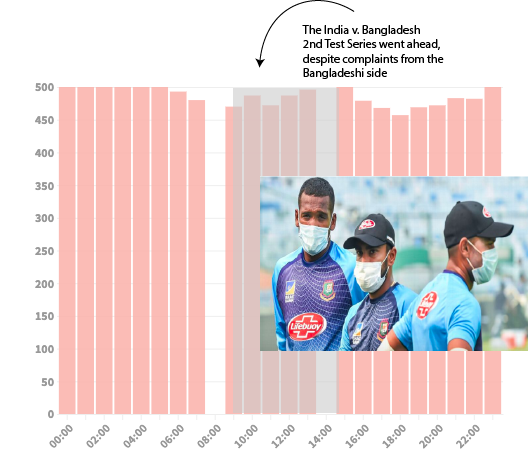
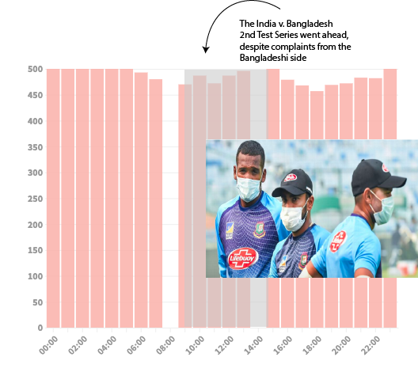

 


In 2016, the Delhi government closed schools for 3 days for the first time. Ditto in 2017; in 2018, no schools were closed. This year, the government has shut down schools twice in a span of two weeks. But shutting down schools in a bandaid fix. Consider the fact that one of the days on which schools were shut down this year, November 14, was Children's Day, the birthday of India's first ever prime minister. On the left, you'll see pollution levels for the day — they did not dip below 'Severe'.
People on Twitter were up in arms when it turned out that children were running around the capital on a day where the government had expressly forbidden their going to school.
That same day, India played Bangladesh in an all day test series. While it's impossible to know how many students were present at that match in particular, just four days previously over 4,000 tickets went to school children in the city who wanted to see the match.